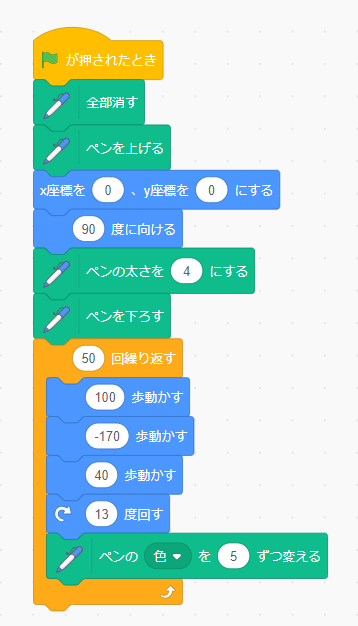

1-1 サイエンスアート

1.内容
スクラッチを使って線を書くプログラムを作った．ペンの拡張機能を追加し，「ペンを降ろす」のブロックの後にスプライトを動かすことで線を描画することができる．画像のプログラムでは，ペンを降ろした後，前進と後退を行うことで直線を描画し，その後スプライトの角度を変え，（方向転換し）次から新しい角度で線を描画できる．これを何回にもわたり繰り返すことで，アートを作る．
2.感想
直線を書く方法が，「スプライトを高速で前後移動させる」という方法なのが面白かった．また少し動きのパラメーターを変えただけでも図形の形が大きく変わりプログラミングの繊細さを感じた．